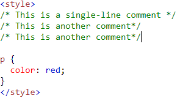
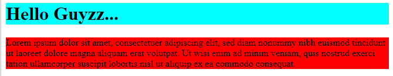
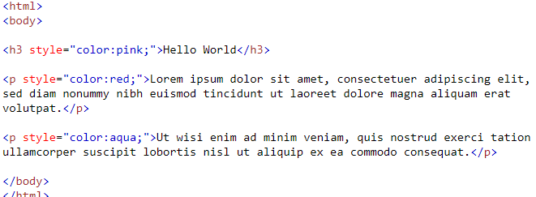
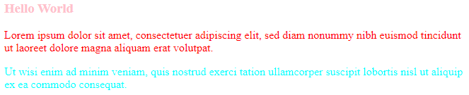
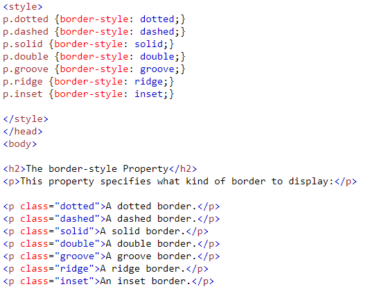
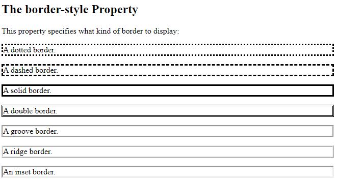
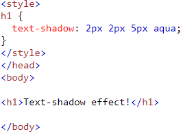
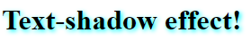
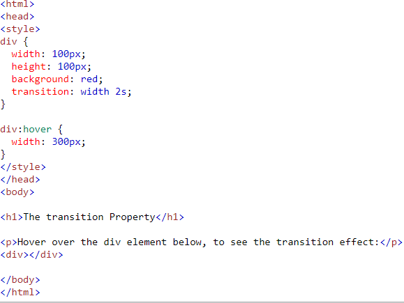

What is CSS?
Cascading Style Sheets, fondly referred to as CSS, is a simple design language intended to simplify the process of making web pages presentable. CSS handles the look and feel part of a web page. Using CSS, you can control the color of the text, the style of fonts, the spacing between paragraphs, how columns are sized and laid out, what background images or colors are used, layout designs,variations in display for different devices and screen sizes as well as a variety of other effects.
CSS Syntax:
p {
color: red;
text-align: center;
}
- p is a selector in CSS (it points to the HTML element you want to style: <p>)
- color is a property, and red is the property value
- text-align is a property, and center is the property value
CSS Selectors
We can divide CSS selectors into five categories:
- Simple selectors (select elements based on name, id, class)
- Combinator selectors (select elements based on a specific relationship between them)
- Pseudo-class selectors (select elements based on a certain state)
- Pseudo-elements selectors (select and style a part of an element)
- Attribute selectors (select elements based on an attribute or attribute value)
CSS Comments
CSS comments are not displayed in the browser, but they can help document your source code.

CSS Colors
- CSS Background Color
- CSS Text Color




CSS Borders
The CSS border properties allow you to specify the style, width, and color of an element's border.


CSS Shadows
The CSS text-shadow property applies shadow to text.


CSS Transitions
CSS transitions allows you to change property values smoothly, over a given duration.

Hover over the div element below, to see the transition effect:
CSS PRACTICE QUESTIONS
- Explain all CSS selectors with examples.
- How to comments in CSS?
- How can we change background color using CSS?
- Explain about CSS transitions with examples.
- Create a simple e-learning website using HTML and CSS.